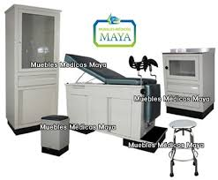

Enlaces donde encontraras la Tecnologia de la Salud
| INICIO | EQUIPOS | QUIENES SOMOS | SERVICIOS |
| Con más de 40 años de éxito el Hospital La Buena Esperanza De Yumbo Empresa Social Del Estado se ha consolidado como la compañía prestadora de servicios de salud líder en el municipio de Yumbo, fue catalogado por el Ministerio de la Protección Social, la Universidad Nacional de Colombia y | equipo medico | En el año 2012 el Hospital la Buena Esperanza de Yumbo, recibió la Recertificación de responsabilidad social otorgada por Fenalco Solidario. |  |
| ESTE HOSPITAL ESTA DISEÑADO PARA TODA LA POBLACION QUE REQUIERA SUS SERVICIOS HOSPITALARIOS TENEMOS PALNES ESPECIALES PARA TODO TIPO DE PERSONAS |
SERVICIOS DE SALUD
|
||
|
Busquenos O LLamenos...
|
Ir a Pagina Oficial |